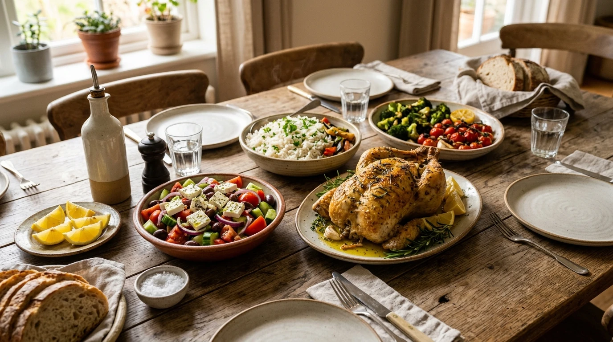

«يوم كامل في مطبخ سليم: تأكل مع عائلتك بلا طبخ منفصل»

أكل حقيقي، مشبع، غني بالنكهات
دجاج مشوي بالأعشاب، أرز بسمتي، سلطات غنية وزيت زيتون بكر.
بيض بلدي + أجبان طبيعية + زيتون
بروتين ودهون صحية تؤمّن ثبات طاقتك 5 ساعات دون رغبة في التلقيط.
طواجن اللحم أو الدجاج مع أرز وخضار
من نفس طعام بيتك وعائلتك، مع ضبط التوازن لحماية استجابة الأنسولين.
قهوتك المفضلة + شوكولاتة داكنة
لا حرمان من متعتك اليومية، بمقادير ذكية تمنع هبوط السكر العصبي.
سلطات غنية وبروتين مهدئ
هضم فائق الراحة لنوم عميق يساعد الكبد على تفعيل حرق الدهون الليلي.
«صوّر طبقك فقط.. ودع ذكاء سليم يحلل كيمياء الوجبة»
أسهل تجربة التزام في العالم العربي
لا داعي لوزن الطعام بالميزان أو إدخال أرقام السعرات يدوياً؛ كاميرا تطبيق سليم المدعومة بالذكاء الاصطناعي تفحص مكونات وجبتك في ثانية واحدة وتخبرك بتأثيرها على الأنسولين والشبع.
تحليل فوري من مجرد صورة
يتعرف تلقائياً على الأطباق العربية والخليجية والمطاعم.
مؤشر الشبع السريري (Satiety Score)
يعطيك تقييماً لمدى قدرة الوجبة على كبح الجوع لعدة ساعات.
إشعار فوري وتوجيه من الكوتش
يصل التقرير مباشرة لفريق المتابعة لتعديل ما يلزم دون تأخير.
«لماذا يفشل الحرمان وينجح نظام سليم؟ كيمياء الهرمونات تتحدث»
ماذا يحدث في كيمياء جسمك؟
يحبس الدهون في البطن والأرداف ويقاوم الحرق.
يدخل الجسم في طور المجاعة وثبات الوزن المستحيل.
ينتهي بانتكاسة ليلية وأكل عاطفي يضاعف الوزن.
كيف يعالج سليم الأيض؟
استقرار السكر يفتح مخازن الدهون العنيدة للحرق اليومي.
إشارات شبع طبيعية من الدماغ بدون صراع نفسي مع الطعام.
يستمر جسمك في خسارة السنتيمترات حتى أثناء نومك.
«هذه هي الوجبات التي خسروا بها 15 و 25 كيلوغراماً»

"كنت معتقد إني مستحيل آكل مكرونة وأخس.. مع د. أحمد نزلت مقاسين بنطلون وأنا باكل مع عيالي عادي جداً."
— محمد ع. (مشترك باقة Private)"أول دايت في حياتي ما أحسش فيه بصداع العصر وشره السكر. الأكل طعمه حلو ومشبع ومليان طاقة."
— داليا س. (مشتركة باقة PRO)"التطبيق علمني اختيارات المطاعم، باسافر وأخرج مع أصحابي وبافضل على مسار النزول بدون تأنيب ضمير."
— طارق م. (مشترك باقة Healthy)أي فكرة من هذه الأفكار الأربعة وجدتها الأقوى؟
أخبرني برقم الفكرة المفضلة لديك وسنقوم بدمجها مباشرة في الصفحة الرئيسية بدلاً من السلايدر القديم.